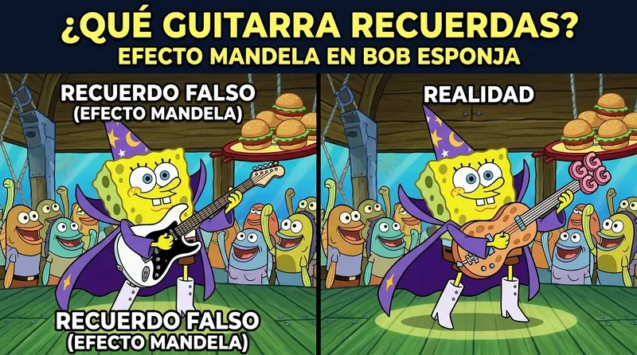

¿Alguna vez has sostenido un recuerdo tan vívido y palpable en tu mente que habrías apostado tu propia reputación por su veracidad, solo para descubrir que la historia oficial insiste en que jamás sucedió? Si es así, no estás solo. Al investigar qué es el efecto mandela y ejemplos reales que demuestren su inquietante presencia en la sociedad moderna, nos topamos con un enigma psíquico y electromagnético devastador: la certeza colectiva de millones de personas compartiendo recuerdos idénticos sobre eventos, frases de películas, logotipos o detalles históricos que físicamente "nunca existieron".
Desde la célebre muerte atribuida al líder sudafricano Nelson Mandela en los años 80 hasta la misteriosa desaparición de elementos gráficos en marcas icónicas de consumo masivo, este fenómeno no discrimina cultura, idioma ni nivel educativo. Para algunos analistas, se trata de un simple fallo en los algoritmos de recuperación del cerebro humano; para los pioneros de la física de vanguardia y la neuroacústica subconsciente, representa la huella inequívoca de saltos en la masa vibracional y desplazamientos de líneas temporales coexistentes.
En este análisis exhaustivo, desglosaremos los casos más inquietantes documentados hasta la fecha, exploraremos las fronteras donde la neurología se cruza con los universos paralelos y revelaremos cómo la sintonización de frecuencias de alta definición puede permitirte reprogramar los patrones electromagnéticos de tu cerebro para elegir conscientemente tu propia realidad.
Los Ejemplos Reales del Efecto Mandela Más Perturbadores que Desafían la Lógica
Para comprender en profundidad qué es el efecto mandela y ejemplos reales que han desconcertado a científicos e historiadores por igual, es necesario revisar los descalces de memoria colectiva más contundentes jamás registrados. No estamos hablando de un descuido individual o una distracción banal, sino de discrepancias masivas que afectan a millones de mentes conectadas en red.
1. Nelson Mandela: El Detonante del Enigma Histórico
A finales de la década de 2000, la investigadora paranormal Fiona Broome acuñó el término tras descubrir una coincidencia perturbadora durante una convención: miles de asistentes compartían la memoria exacta e inequívoca de que el activista y político Nelson Mandela había fallecido dentro de la prisión de Robben Island durante los años 80. La gente detallaba transmisiones de televisión en vivo, portadas de periódicos mundiales, disturbios en las calles de Sudáfrica y el conmovedor discurso fúnebre de su viuda. Sin embargo, en esta línea temporal registrada, Mandela fue liberado en 1990, asumió la presidencia de su país y falleció de causas naturales en el año 2013 en su residencia.
2. El Monóculo Ausente del Tío Pennybags (Monopoly)
Haz este ejercicio mental rápido: cierra los ojos e imagina al multimillonario trajeado del juego de mesa Monopoly . Probablemente visualices su sombrero de copa, sus grandes bigotes blancos, su bastón y un elegante monóculo de cristal sobre su ojo derecho. La realidad física es categórica: el personaje de Monopoly jamás ha llevado monóculo en ninguna versión comercializada desde 1935. Millones de jugadores en todo el mundo confunden su rostro con el personaje de Mr. Peanut o proyectan un estereotipo victoriano que nunca estuvo impreso en el cartón.
3. Darth Vader y la Revelación de Star Wars
En la cumbre dramática de El Imperio Contraataca (1980), uno de los momentos más citados en la historia del cine pop es la frase: "Luke, yo soy tu padre" . Sin embargo, al reproducir la cinta original o analizar las cintas de audio máster de producción, la línea pronunciada por el actor James Earl Jones es tajantemente diferente: "No, yo soy tu padre" . A pesar de los archivos cinematográficos intactos, la memoria global retiene colectivamente la sintaxis alterada.
4. Fruit of the Loom y la Cornucopia Fantasma
Este es quizás el caso visual más desconcertante para los diseñadores gráficos y expertos en marcas. Una abrumadora mayoría de consumidores jura recordar que el logotipo clásico de la marca de ropa interior Fruit of the Loom incluía un cuerno de la abundancia (cornucopia) hecho de mimbre trenzado, del cual brotaban las manzanas y uvas. No obstante, los registros de patentes históricas de la compañía demuestran que el logotipo siempre consistió únicamente en frutas agrupadas sobre un fondo limpio. Jamás existió una cornucopia oficial, aun cuando existen prendas vintage modificadas por usuarios que intentaban replicar el diseño que sus mentes "recordaban".
5. La Ortografía Mágica de KitKat
Basta con acudir a un supermercado para presenciar este desfasaje. Una inmensa cantidad de compradores recuerda claramente haber consumido barras de chocolate con la marca escrita con un guion intermedio: "Kit-Kat". Si buscas los registros de empaques desde el siglo pasado, descubrirás que la marca se ha comercializado ininterrumpidamente como "KitKat", todo junto y sin guion.
6. Pikachu y la Franja Negra en su Cola
Los fanáticos de la franquicia Pokémon a menudo dibujan o imaginan al icónico personaje Pikachu con una marcada franja negra al final de su cola con forma de rayo. Sin embargo, la cola de Pikachu siempre ha sido completamente amarilla en su extremo, con una coloración marrón únicamente en la base de su espalda. La franja negra es un parche de memoria artificial presente en la mente de millones de seguidores.
"La percepción de la realidad sólida no es un evento mecánico inmutable, sino una interpretación electromagnética procesada por los receptores neuronales del cerebro en constante resonancia vibracional."
¿Por Qué Ocurre el Efecto Mandela? Neurociencia vs. Física Cuántica
Cuando los científicos intentan dar respuesta a qué es el efecto mandela y ejemplos reales desde una postura académica tradicional, apelan a fenómenos de la psicología cognitiva como la confabulación y los falsos recuerdos. El cerebro humano no opera como una cámara de video digital de ultra alta precisión; es una máquina analógica de interpretación holística. Ante vacíos de información o estímulos ambiguos, la mente activa procesos de neuroplasticidad y reconstrucción semántica, utilizando esquemas previos para rellenar los huecos y fabricar memorias sintéticas altamente coherentes.
No obstante, la explicación científica ortodoxa tropieza cuando debe justificar la alineación matemáticamente exacta de millones de memorias individuales sin conexión previa. ¿Cómo es posible que personas aisladas en distintos continentes añadan la misma cornucopia al mismo logotipo o recuerden la misma frase corregida en una película?
Aquí es donde entra la teoría cuántica avanzada y los postulados de la Interpretación de los Muchos Mundos (MWA). Según la física de superposición cuántica, múltiples universos y líneas de tiempo paralelas coexisten en el mismo espacio vibracional. Un colapso de la función de onda o una fluctuación en la frecuencia magnética del entorno planetario puede provocar pequeños desplazamintos de fase. La conciencia colectiva, al reajustar su punto de encaje electromagnético, arrastra consigo rastros de la memoria subconsciente pertenecientes a la línea temporal previa.
Esta perspectiva plantea una revelación transformadora: si el cerebro es un transceptor de frecuencias capaz de sintonizar distintos canales de realidad, no estás atado a una sola línea temporal de escasez, estrés o limitación mental.
El Subconsciente y la Sintonización Pasiva de Realidades
Tu mente consciente administra apenas el 5% de tu actividad diaria, procesando unos escasos 40 a 50 bits de información por segundo. El 95% restante es controlado de forma automatizada por tu mente subconsciente, un superordenador bioeléctrico que gestiona más de 11 millones de bits por segundo. Es allí, en las profundidades del subconsciente, donde se almacenan las creencias raíz, los patrones de supervivencia y el código de resonancia que determina lo que experimentas como "tu realidad sólida".
La razón por la cual la inmensa mayoría de las personas fracasan al intentar cambiar sus circunstancias mediante la fuerza de voluntad o meditaciones tradicionales es que permanecen atrapadas en el ruido analítico de las ondas cerebrales Beta. La rumiación constante y el estrés del día a día bloquean el acceso al código subconsciente. Intentar manifestar riqueza o paz mental mientras tu cerebro emite ráfagas de ondas Beta aceleradas es como intentar grabar un archivo de alta fidelidad en una cinta magnética desgastada.
Quienes exploran la ley de atracción cometen sistemáticamente los 7 mitos de la ley de atracción al asumir que basta con repetir afirmaciones verbales en voz alta, sin comprender que el subconsciente no responde a las palabras conscientes, sino a los patrones de coherencia bioacústica y a la frecuencia electromagnética que emite el corazón y el cerebro.
| Criterio de Evaluación | Audios Convencionales (YouTube/MP3) | QuantumAudio® WAV Máster 24-Bit |
|---|---|---|
| Fidelidad de Onda | Compresión Lossy (Destruye microfrecuencias) | Espectro Puro HD (100% Sin Compresión) |
| Respuesta Cerebral | Superficial / Efecto Placebo Temporal | Neuroestimulación Física Directa |
| Facilidad de Uso | Requiere concentración y meditación activa | Escucha 100% Pasiva (Sin esfuerzo) |
| Precisión de Frecuencia | Distorsionada por algoritmos de compresión | Precisión matemática de fase en 24 bits |
El Fraude de la Compresión: Por Qué los Audios de YouTube No Logran Reprogramar Tu Mente
Si alguna vez has intentado utilizar pistas de frecuencias binaurales, música de meditación o sonidos de reprogramación subconsciente en YouTube o plataformas de streaming gratuito para superar el insomnio, la ansiedad o atraer abundancia, es casi seguro que tus resultados hayan sido nulos o efímeros. Existe una explicación técnica irrefutable que las plataformas no revelan.
Plataformas masivas como YouTube, Spotify o SoundCloud aplican algoritmos de compresión psicoacústica extremadamente agresivos (tales como MP3 a 128kbps o AAC/Ogg Vorbis) para reducir el tamaño de los archivos en sus servidores. Durante este tijeretazo digital, los algoritmos eliminan sin piedad todas las frecuencias extremas y los armónicos secundarios que consideran "inaudibles" para el oído humano consciente.
El grave problema técnico radica en que **son precisamente esas microfrecuencias invisibles y diferencias de fase las encargadas de desencadenar la sincronización de ondas cerebrales ** (arrastre cerebral). Al cercenar las ondas armónicas, el archivo comprimido pierde su geometría sagrada y su efectividad bioeléctrica, transformándose en un simple ruido decorativo inútil para la mente profunda. Si deseas profundizar en este diagnóstico de ingeniería sonora, consulta nuestro informe completo sobre audio cuántico vs audios de youtube .
⚠️ ADVERTENCIA TÉCNICA: La reprogramación subconsciente pasiva exige una precisión de fase absoluta en los dos hemisferios cerebrales. La compresión MP3 altera los tiempos de microsegundos entre canal izquierdo y derecho, impidiendo que el cerebro entre en estado Theta o Delta.
Quantum Audio: La Solución Neuroacústica Pasiva en Alta Definición
Para superar definitivamente las barreras de la compresión digital y el agotamiento mental de la meditación forzada, se creó **Quantum Audio**. Se trata de un activo digital audiofónico de vanguardia desarrollado mediante procesos de ingeniería de audio máster HD de 24 bits, diseñado con un único propósito: activar la inducción bioacústica directa sobre la mente subconsciente.
A diferencia de los métodos complejos que demandan disciplina férrea, visualización fatigante o años de práctica, Quantum Audio se fundamenta en la **escucha 100% pasiva**. Todo el trabajo pesado lo realiza la estructura sónica pura: las microfrecuencias calibradas estimulan directamente el nervio auditivo, guiando las ondas cerebrales hacia estados profundos de Theta y Delta sin que tengas que realizar ningún esfuerzo consciente.
Al silenciar el ruido analítico del cerebro y disolver los bloqueos electromagnéticos acumulados por años de estrés, el organismo experimenta un reseteo profundo. Del mismo modo que muchas personas emplean un sonido milagroso para limpiar la energía negativa del cuerpo , la neuroestimulación en alta definición de Quantum Audio restablece la coherencia vibracional de tu campo energético en minutos.
Preguntas Frecuentes sobre el Efecto Mandela y la Reprogramación Mágica
¿El Efecto Mandela es peligroso o un síntoma de falla cerebral?
En absoluto. Es un fenómeno sociocultural y psicológico extendido globalmente. Tanto si responde a la reconstrucción cognitiva como a desplazamientos de fase cuánticos, no implica ningún trastorno psiquiátrico ni deterioro neurológico.
¿Cómo puede un audio en alta definición cambiar mi experiencia de vida?
El sonido no modifica mágicamente la materia inerte externa; reconfigura el filtro bioeléctrico con el que tu cerebro procesa la realidad. Al sincronizar tus hemisferios cerebrales en frecuencias de alta coherencia, eliminas el estrés, reprogramas tus reacciones subconscientes y comienzas a tomar decisiones alineadas con tu mayor potencial.
¿Por qué es indispensable que el formato sea WAV de 24 bits y no MP3?
Porque únicamente los archivos Máster WAV sin compresión mantienen intactas las microfrecuencias binaurales y la alineación matemática de fase necesarias para activar la resonancia neuronal profunda sin fatiga auditiva.
¿Estás listo para descubrir lo que ocurre cuando tu subconsciente se conecta a la frecuencia pura?
El Efecto Mandela nos demuestra que las certezas de la realidad física son infinitamente más moldeables de lo que nos han hecho creer. No permitas que el ruido mental diario ni los archivos comprimidos de baja calidad mantengan tu mente atada a viejos patrones de limitación. Da el salto hacia la neuroestimulación en alta definición y comprueba por ti mismo la fuerza de tu mente subconsciente.
DESCUBRIR LA EXPERIENCIA QUANTUMAUDIO® HOY